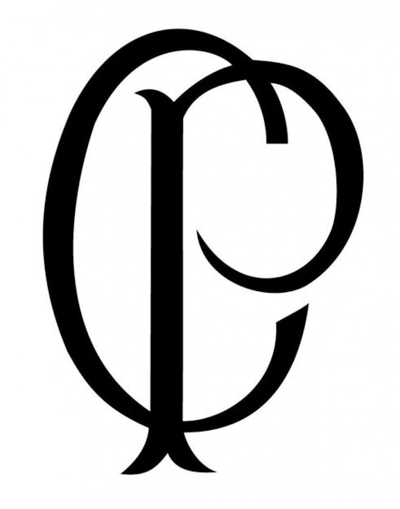
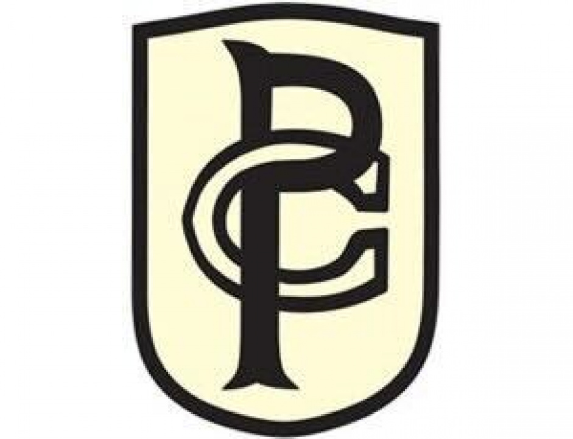
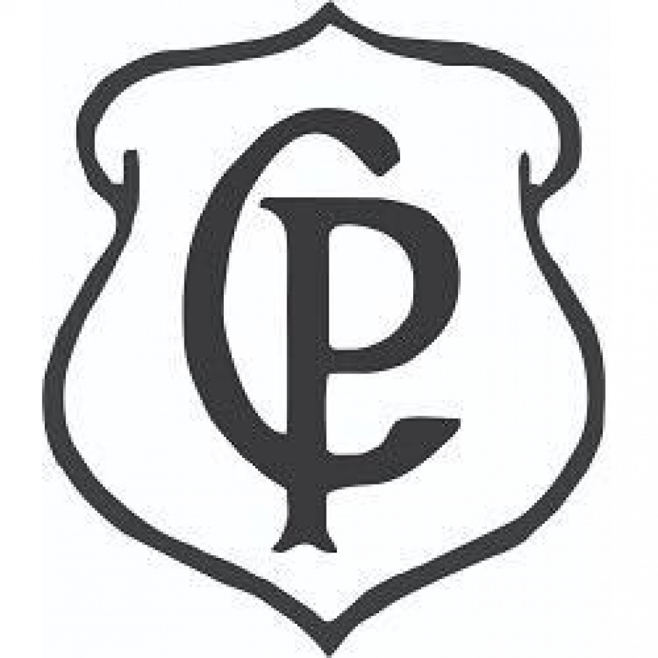
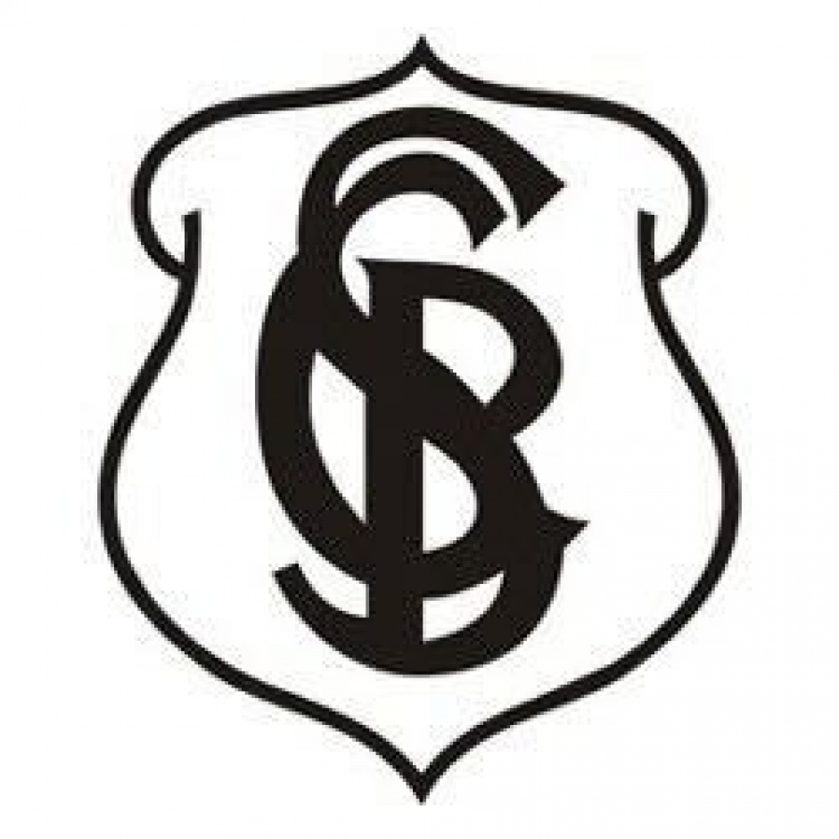
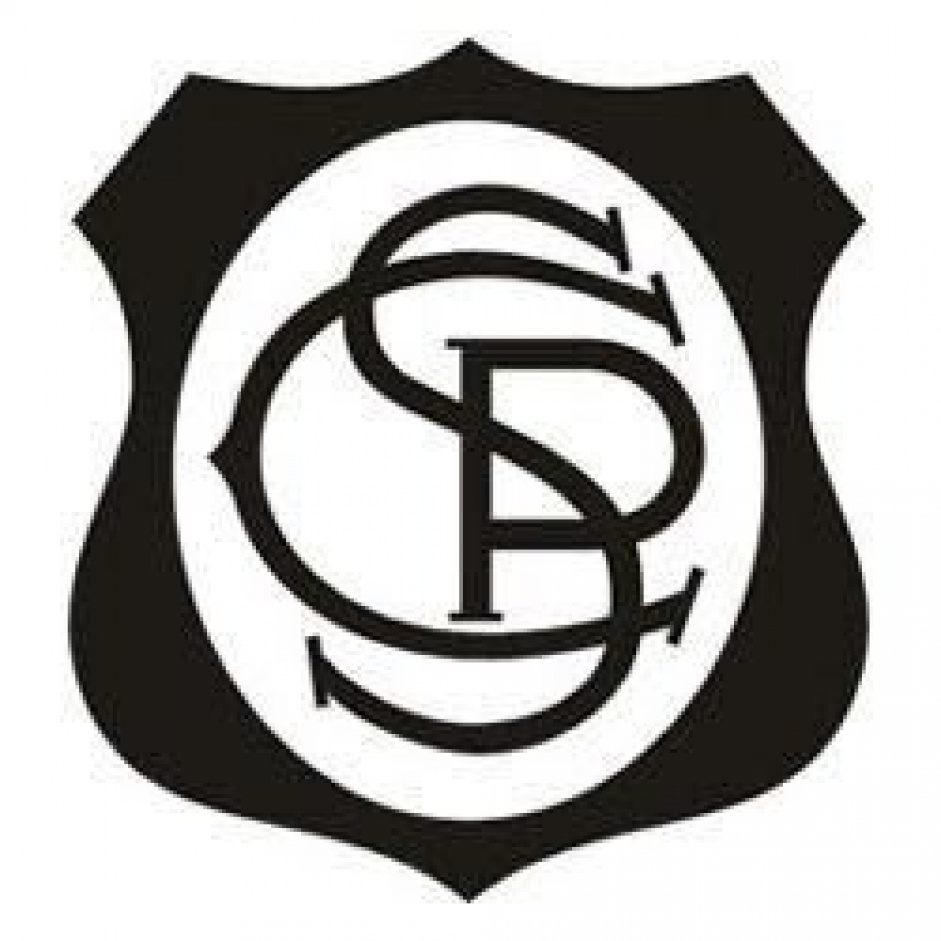
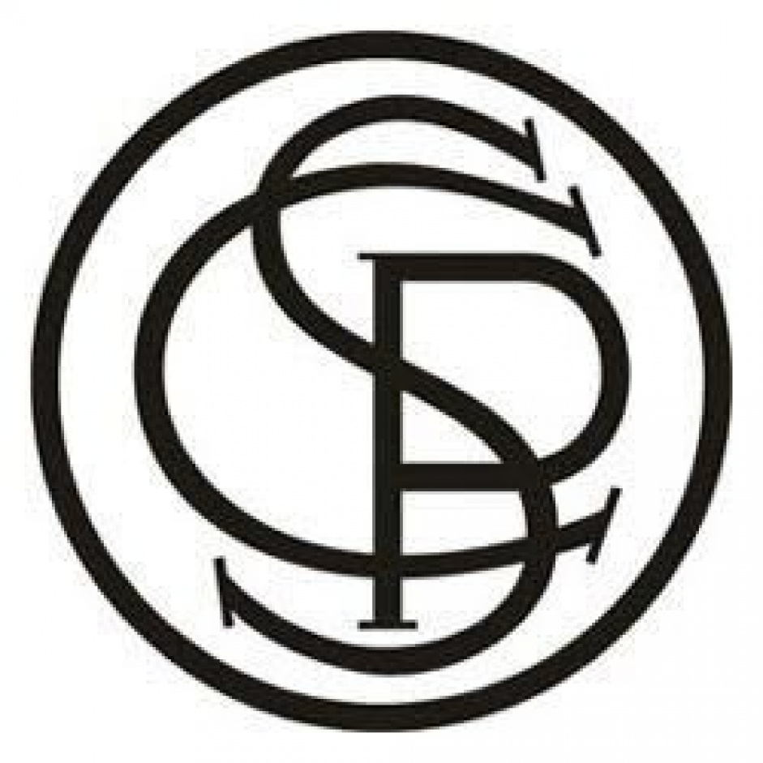
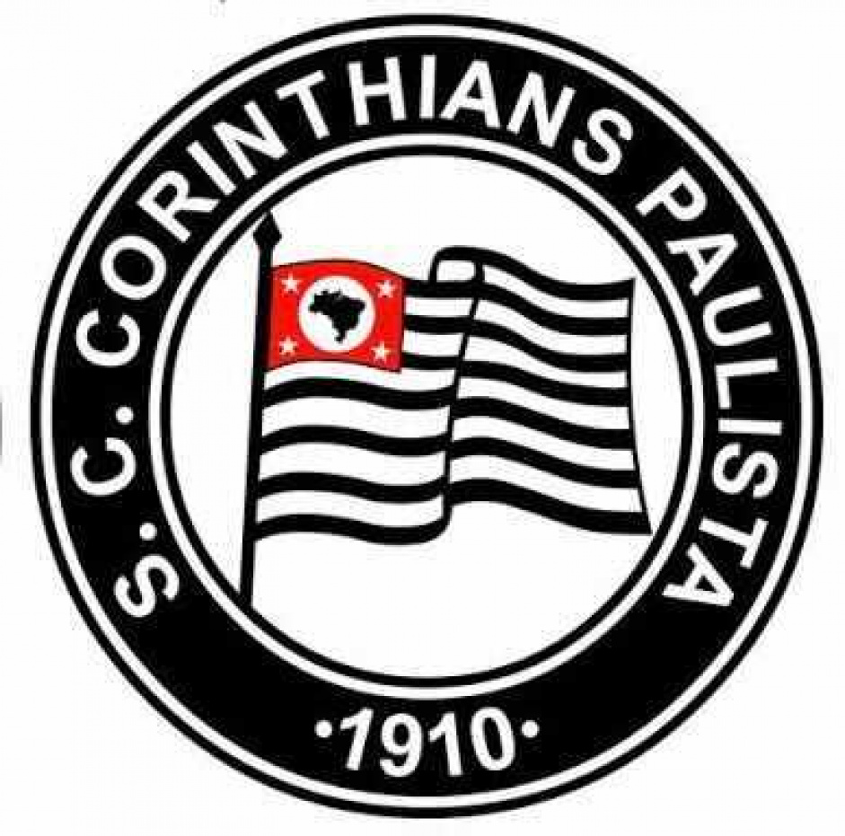
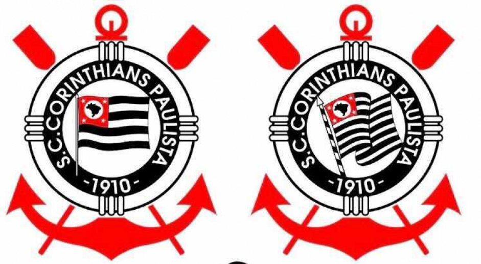
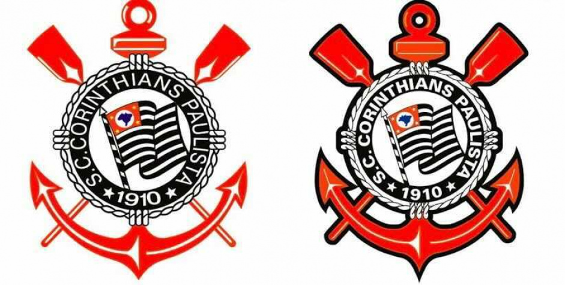
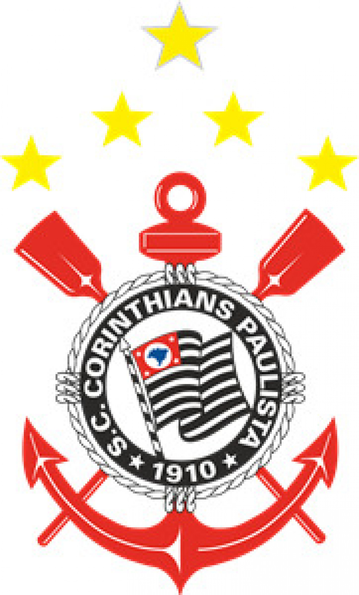

ESCUDOS
A história do escudo do Corinthians começa muito antes dele sequer existir e é completamente ligada às raízes do clube. Isso porque, apesar de ter sido fundado em 1º de setembro de 1910, o Corinthians ficou sem um símbolo por três anos. Durante todo esse tempo, era entendido que o time, formado por trabalhadores, era de várzea e não se enquadrava nos padrões de uma equipe de elite no Brasil.
1913
Primeiro escudo

Em 1913, o Corinthians precisava de um escudo para ingressar na Liga Paulista. Antônia Perrone, namorada de Raphael Perrone, um dos fundadores, bordou o primeiro escudo com as iniciais "C" e "P" (Corinthians Paulista) em preto. Com esse emblema, o Corinthians venceu representantes de Minas Gerais e o FC São Paulo, conquistando uma vaga na Liga.
Nesse período, o clube recebeu a alcunha de "Time do Povo", devido à sua base de trabalhadores e operários, um título que perdura até hoje.
1914
Novo ano, novo escudo

Em 1914, o Corinthians abandonou o primeiro escudo "CP" após apenas dois jogos contra o Torino e adotou um novo distintivo com as letras "C" e "P" entrelaçadas dentro de um brasão. Esse emblema foi redescoberto em 2011 por historiadores, confirmando também que o uniforme do clube naquela época era bege. A descoberta foi feita a partir de uma foto deixada por um conselheiro no memorial do clube e pesquisas no Almanaque de Celso Unzelte, revelando um símbolo único na história do Corinthians.
1916
Mudanças rebuscadas

Em 1916, o Corinthians passou por outra mudança em seu distintivo, criado pelo litógrafo Hermógenes Barbuy, irmão do ídolo Amilcar Barbuy. O novo escudo adotou um formato mais elaborado e com elementos medievais. A descoberta desse terceiro escudo ocorreu em 2019, quando o historiador Fernando Wanner, responsável pelo Memorial do Corinthians na época, encontrou imagens de jogos que apresentavam o uso desse símbolo. O time utilizou esse distintivo em cerca de seis amistosos que antecederam a Liga Paulista daquela temporada, resgatando assim uma parte importante da história do clube.

Em 1916, Hermógenes Barbuy, o litógrafo, criou variações no escudo do Corinthians. Ele adicionou a letra "S" ao escudo, fazendo com que o "C" passasse a representar tanto "Club" quanto "Corinthians". Este quarto distintivo ficou marcado por uma notável conquista: o segundo título paulista invicto da equipe. O Corinthians venceu todos os nove jogos da competição, marcando 31 gols e sofrendo apenas três.

No mesmo ano, Hermógenes fez variações para o escudo do Timão. O litógrafo, mantendo o escudo, acrescentou a letra "S", de forma que o "C" passou a valer para Club e Corinthians. O quarto distintivo foi um dos que ficou marcado por uma inesquecível campanha: o segundo título paulista invicto da equipe. O Corinthians venceu os noves jogos que disputou, tendo marcado 31 gols e sofrido apenas três.

Ainda em 1916, para celebrar a conquista do Paulista e o início da construção do estádio da Ponte Grande, o conhecido formato redondo foi apresentado e descartou-se o uso da moldura medieval. As letras, por sua vez, mantiveram-se iguais por mais alguns anos, até 1919, quando vieram alterações expressivas.
1919
Aproximando-se do atual

Em 1919, o escudo do clube passou a exibir a bandeira do estado de São Paulo, o nome completo do clube e a data de sua fundação, sendo pintado pela primeira vez na fachada do pavilhão da Ponte Grande. Esse design permaneceu até 1926, quando o ex-ponta-direita Francisco Rebolo Gonsales adicionou elementos como remos, boia e âncora, representando os esportes aquáticos praticados no Parque São Jorge. No entanto, somente em 1939 esse novo escudo foi adotado nas camisas do clube.
1980
Mudanças marcantes
Em 1919, o escudo do clube passou a exibir a bandeira do estado de São Paulo, o nome completo do clube e a data de sua fundação, sendo pintado pela primeira vez na fachada do pavilhão da Ponte Grande. Esse design permaneceu até 1926, quando o ex-ponta-direita Francisco Rebolo Gonsales adicionou elementos como remos, boia e âncora, representando os esportes aquáticos praticados no Parque São Jorge. No entanto, somente em 1939 esse novo escudo foi adotado nas camisas do clube.


1990
Estrelas
O Corinthians adicionou estrelas no escudo desde a primeira conquista do Campeonato Brasileiro, em 1990. Aconteceu o mesmo com o Mundial, que virou uma estrela maior, acima das outras. Foi então que, no dia 26 de outubro de 2011, o clube anunciou a retirada das estrelas sob o argumento de que todos os títulos são especiais. Desde então, o escudo do Timão segue o mesmo.
